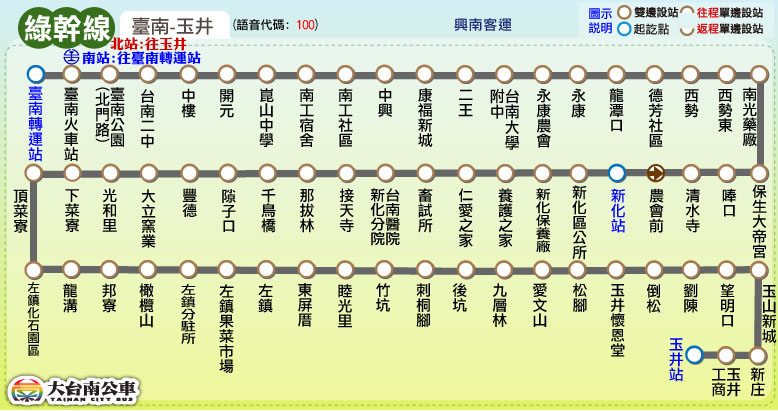

路線圖
路線資訊
票價表
時刻表
轉乘資訊

大台南公車 ─ 綠幹線 路線資訊
Tainan Bus Green Line, Route Information
起訖點
台南公園 － 玉井
營運公司
興南客運
首／末班車發車時刻
往 玉 井：05:55／21:55
往 台南公園：06:00／22:00
班距
固定班次 尖15離30
收費方式
里程計費
公車動態資訊
票價表
Ticket Fare
全票
半票
投現
-
-
電子票證
-
-
時刻表
Bus schedule
大台南公車－綠幹線 主要轉乘點資訊
Tainan bus green line, Transfer information
台南火車站
台鐵台南站
88、99
市區公車(除15、20路)
綠幹線
藍幹線
紅幹線、紅1、紅2、紅3、紅4
橘3、橘12